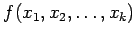
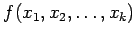

Inhalt Index DeskTop Bronstein

 Wahrscheinlichkeitsrechnung und Mathematische Statistik Theorie der Meßfehler Fehlerfortpflanzung und Fehleranalyse Gaußsches Fehlerfortpflanzungsgesetz
Wahrscheinlichkeitsrechnung und Mathematische Statistik Theorie der Meßfehler Fehlerfortpflanzung und Fehleranalyse Gaußsches Fehlerfortpflanzungsgesetz


Zu bestimmen sind Zahlenwert und Fehler einer Größe  , die über die Funktion von den unabhängigen Variablen abhängt. Die Werte xj können als Realisierungen von Zufallsgrößen angesehen werden und lassen sich als Mittelwerte
, die über die Funktion von den unabhängigen Variablen abhängt. Die Werte xj können als Realisierungen von Zufallsgrößen angesehen werden und lassen sich als Mittelwerte  je einer Meßreihe mit nj Meßwerten bestimmen. Ihre Streuung ist . Es ist zu untersuchen, wie sich die Fehler der Variablen auf die Funktion  auswirken. Die Funktion muß differenzierbar sein, ihre Variablen müssen stochastisch unabhängig sein, sie dürfen aber beliebigen Verteilungen mit unterschiedlichen Streuungen
je einer Meßreihe mit nj Meßwerten bestimmen. Ihre Streuung ist . Es ist zu untersuchen, wie sich die Fehler der Variablen auf die Funktion  auswirken. Die Funktion muß differenzierbar sein, ihre Variablen müssen stochastisch unabhängig sein, sie dürfen aber beliebigen Verteilungen mit unterschiedlichen Streuungen  genügen.
genügen.